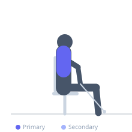
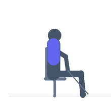

Exercise guide / Seated Cable High Row to Neck
Seated Cable High Row to Neck
The seated cable high row to neck uses a high cable pulley angled downward and pulls the attachment toward the back of the neck with elbows flared wide. The unique downward-angled pull when combined with the high target position creates intense upper trap, rhomboid, and rear deltoid contraction. It is used in bodybuilding to develop upper back width and rear delt thickness visible from the front.
Primary muscles
trapezius upper
deltoid posterior
Secondary muscles
trapezius middle
rhomboid major
Equipment
Cable Machine (High Pulley)


Starting position
- Sit facing a high cable pulley. Attach a wide grip bar or rope. Grasp with an overhand grip, arms extended toward the high pulley.
Setup
- Set the cable to the highest available position. Sit close enough that the arms are extended upward at approximately 45 degrees.
Steps
- Step 1: Begin with arms extended upward toward the high pulley.
- Step 2: Pull the attachment toward the back of the neck, driving elbows down and out.
- Step 3: At peak, the bar or rope should be at neck level, elbows wide.
- Step 4: Hold 1 second.
- Step 5: Return under control.
Coaching cues
- Elbows go wide like wings
- Pull to the neck, not the face
- Upright chest throughout
Breathing
- Exhale on the pull. Inhale on the return.
Range of motion
- Arms extended to attachment at neck level with elbows wide.
Tempo
- 2-1-3-0
Common mistakes
- Pulling behind the neck with excessive weight — creates cervical spine risk
- Elbows tracking forward rather than out wide
Safety
- Moderate loads only — the cervical spine is vulnerable in this position
- Do not force the neck into flexion; pull to a comfortable position
Training
- hypertrophy: 10–15 reps
- hypertrophy: 3–4 sets
- Rest: {'hypertrophy': 90}